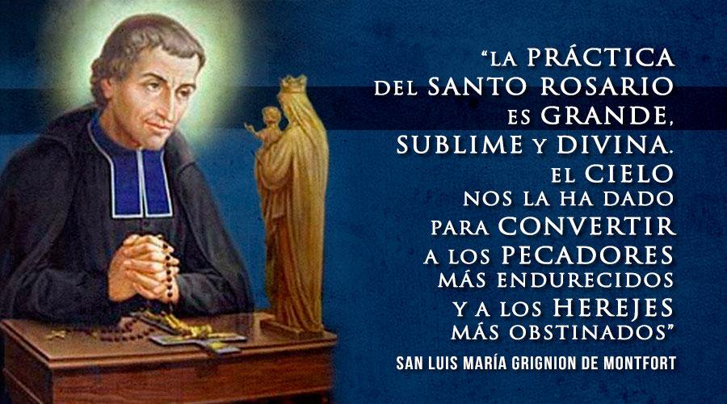
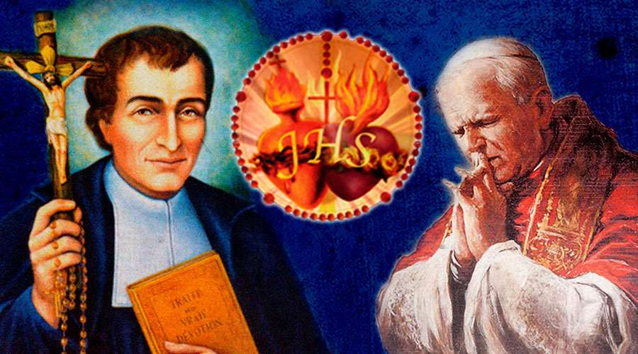

¿Qué es y para qué conocernos?
El conocimiento de sí mismo consiste en adquirir plena conciencia de sí mismo para desterrar nuestros vicios y fomentar nuestras buenas cualidades a fin de alcanzar la santidad.
La tibieza
“Conozco tus obras: no eres ni frío ni caliente. ¡Ojalá fueras frío o caliente! Pero porque eres tibio y no frío o caliente, voy a vomitarte de mi boca.” (Ap 3, 15-16).
Existe un nivel “generalizado” de la tibieza que se describe en la terrible frase: “el que peca y reza, empata”. Desgraciadamente debemos reconocer que una enorme cantidad de fieles bautizados padecen esta tibieza que va generalmente acompañada de un profundo relativismo.
Detrás de esta expresión y de esta tibieza se esconde una profunda ignorancia y desamor. En efecto, quien así piensa ignora que el amor a Dios exige fidelidad y coherencia. ¿Puede un hombre ser infiel a su esposa y tranquilizar su conciencia diciendo que no le falta con el mercado y con todo lo necesario para vivir? Ahí no hay amor verdadero. El amor verdadero exige que se ame a la persona no sólo por momentos, sino siempre. Lo mismo sucede en la vida espiritual: el que dice pecar y rezar para “empatar” es un tibio y será vomitado de la boca de Dios.
Sentido del sufrimiento
Es una realidad que todos sufrimos. Más aún, es un misterio el hecho de que todos suframos. Existe una multitud de teorías sobre el sufrimiento que tratan de explicar este misterio desde los más diversos ángulos, en muchas ocasiones prometiendo que de aceptar tal o cual teoría quedaremos, al instante inmunes al padecimiento y libres de sufrimientos: “el sufrimiento no es real, sino una obra de tu mente.
Si sufres es que estás dormido porque, en sí, el sufrimiento no existe, es un producto de tu sueño”. Esta tremenda mentira que forma parte de una peligrosa corriente de pseudo-espiritualidad oriental, intenta dar respuesta al sufrimiento, negándolo, invitando a las personas a huir de él, a no pensar en él, a evitar que las cosas nos afecten. ¿Alguien podría decirle la anterior frase a una mamá que acaba de perder a su hijo? ¿Alguien se atrevería a decirle: “señora, ese sufrimiento no es real, es sólo una obra de su mente”? Esa teoría es tan contraria a la realidad que experimentamos a diario, que cae por su propio peso.
El Perdón
El perdón es sanador. Perdonar es tomar la decisión de desprendernos del pasado para sanar el presente. El per-dón es un “perfecto don”, un “súper don”, pues un don es tanto más perfecto cuanto menos lo merezca quien lo recibe. Si una persona trabaja todo un mes y a cambio de este trabajo recibe una remuneración, decimos que esta persona recibió lo que merecía. Aquí no hay ningún don, ningún regalo, sólo recibe el producto de su esfuerzo. Pero si tenemos a otro que no trabaja en todo el mes y, no obstante, también recibe la remuneración, entonces aquí tenemos un don, un regalo que se da a quien no lo merece, algo que no nace de la “justicia” -que en este caso exigiría no dar nada a quien nada ha hecho- sino de la grandeza del corazón de quien da. Pero supongamos que esta persona no sólo no ha trabajado en todo el mes sino que se ha empecinado en hacerle absolutamente difícil el trabajo al prójimo y, sin embargo, este le sigue recompensando... bajo el criterio del mundo aquí tenemos a un tonto, bajo el criterio del evangelio aquí tenemos un corazón semejante al de Jesús que no se cansó de darnos aunque le rechazamos, un corazón que ama verdaderamente. Así es el perdón, requiere grandeza de corazón, requiere la lógica del amor, de la generosidad, de la magnanimidad: es el perfume que exhala la flor después de ser pisoteada.
Sin Oración no hay salvación
“El que ora ciertamente se salva, el que no ora ciertamente se condena” (San Alfonso María de Ligorio). Esta sola frase de San Alfonso María de Ligorio es suficiente para mostrar la importancia capital de la oración: es requisito indispensable para la salvación.
En otras palabras, toda persona que quiera llegar al cielo debe orar y orar bien. Hay cosas opcionales en la vida espiritual; una persona podría tener más afinidad a una espiritualidad que a otra, siempre y cuando éstas sean católicas, podría tener más devoción a un santo que a otro, podría gustar más de una práctica de piedad que de otra. Sin embargo, el hacer oración no es una opción.
Es un llamado universal de Dios: «Dios vivo y verdadero llama incansablemente a cada persona al encuentro misterioso de la oración.» (Catecismo 2567) «Dios llama siempre a los hombres a orar.» (Catecismo 2569).
El valor del sacrificio
Todos hemos escuchado de las fuertes mortificaciones que realizaron los grandes santos. Prolongados ayunos, largas vigilias, duras penitencias. Es particularmente conmovedor el pasaje de la vida de san Francisco de Asís, en que se revolcaba entre espinas para alejar la tentación de lujuria[1]. Hoy nos preguntamos: ¿Está bien esto? ¿No debemos cuidar nuestro cuerpo que es Templo del Espíritu Santo (cf. 1 Cor 6,19)? ¿Por qué estas mortificaciones tan extremas?
Obediencia hasta la muerte
A la susceptibilidad del hombre actual, la sola palabra ‘obediencia’ le estremece y le genera repulsa. El hombre, al dar la espalda a Dios y erigirse a sí mismo como tal, considera que la manera de obrar se debe ajustar, exclusivamente, al propio criterio, fundamentado por lo general en el capricho, en la sensibilidad, o en su confundido entendimiento afectado por el error. Aparecen, así, frases como: “a mí no me manda nadie”, “yo me mando a mí mismo”, “si obedece, se la montan”, etc.
III CONOCIMIENTO DEL MARÍA

Fin de los tiempos y apariciones marianas
Para hablar sobre el fin de los tiempos, tomamos aquí, un fragmento completo del teólogo Antonio Royo Marín:
En la Sagrada Escritura se nos dice que nadie absolutamente sabe cuándo sobrevendrá el fin del mundo. Cristo resucitado advirtió a sus apóstoles que no les correspondía a ellos conocer los tiempos ni los momentos que el Padre ha fijado en virtud de su poder soberano (Hch 1,7). Y en el Evangelio les había ya dicho que de aquel día y de aquella hora nadie sabe, ni los ángeles del cielo ni el hijo, sino sólo el Padre (Mt 24,36). Ya se comprende que el hijo no lo sabía como formando parte de su mensaje mesiánico que había de comunicar a los hombres, aunque sí como verbo eterno de Dios. Sin embargo, la misma Sagrada Escritura nos proporciona ciertos signos o señales por donde puede conjeturarse de algún modo la mayor o menor proximidad del desenlace final. No se nos prohíbe examinar esas señales, pero es preciso tener en cuenta que son muy vagas e inconcretas y se prestan a grandes confusiones, sobre todo por el carácter evidentemente metafórico y ponderativo de muchas de ellas. Buena prueba de esto la ofrece el hecho de que la humanidad ha creído verlas ya en diferentes épocas de la historia que hacían presentir la proximidad de la catástrofe final.
Vamos, pues, con sobriedad y moderación a recoger esas señales, pero guardándonos mucho de llegar a conclusiones demasiado concretas y simplistas. Lo único cierto en esta materia tan difícil y oscura es que nadie absolutamente sabe nada: es un misterio de Dios. He aquí las principales señales de que nos habla la Sagrada Escritura:
María es el mejor camino para ir a Jesús
Empezaremos diciendo con San Luis María Grignon de Montfort que esta devoción es camino fácil, corto, perfecto y seguro para llegar a la unión con Dios, en la cual consiste la perfección cristiana.
Falsas devociones a la Virgen
San Luis de Montfort expone las falsas devociones a la Virgen en su Tratado de la Verdadera Devoción, en los numerales del 90 al 104. Copiamos el texto exacto:
Hoy más que nunca, nos encontramos con falsas devociones que fácilmente podrían tomarse por verdaderas. El demonio, como falso acuñador de moneda y ladrón astuto y experimentado, ha engañado y hecho caer ya a muchas almas por medio de falsas devociones a la Santísima Virgen y cada día utiliza su experiencia diabólica para engañar a muchas otras, entreteniéndolas y adormeciéndolas en el pecado, bajo el pretexto de algunas oraciones mal recitadas y de algunas prácticas exteriores inspiradas por él.
Como un falsificador de moneda no falsifica ordinariamente sino el oro y la plata y muy rara vez los otros metales -porque no valen la pena-, así el espíritu maligno no falsifica las otras devociones tanto, como las de Jesús y María: la devoción a la Sagrada Comunión y la devoción a la Virgen, porque son entre las devociones, lo que el oro y la plata entre los metales.
Características y efectos de la verdadera devoción
La verdadera devoción a la Santísima Virgen es interior. Es decir, procede del espíritu y del corazón, de la estima que se tiene de Ella, de la alta idea que nos hemos formado de sus grandezas y del amor que le tenemos. Esta devoción no consiste sólo en prácticas exteriores, que siempre son buenas y necesarias, sino que se caracteriza por una profunda vida de intimidad y unión con nuestra Santísima Madre: vivir “por”, “con”, “para” y “en” María. Esto lo desarrollaremos más adelante.
Verdadera devoción, entrega y gratitud
Hay diversas actitudes auténticas de parte del cristiano para con la Santísima Virgen:
La primera, consiste en honrar a María como Madre de Dios e implorar de tiempo en tiempo su protección, mientras nos esforzamos en cumplir nuestros deberes cristianos, evitando el pecado y obrando por amor, más que por temor.
La segunda, consiste en alimentar un profundo amor, estima, confianza y veneración hacia la Santísima Virgen. Se expresa haciendo conocer el puesto ocupado por Ella en el plan de salvación, publicando sus alabanzas, honrando sus imágenes, recitando el Santo Rosario, alistándose en las Asociaciones Marianas. Esta actitud, siempre que nos comprometamos a vivir cristianamente, es buena, santa y saludable. Pero no logra liberarnos de todo egoísmo, para unirnos perfectamente a Jesucristo.
La tercera, es conocida y vivida por muy pocas personas. Es una consagración total. Consiste en ofrecerse con absoluta disponibilidad a María, para realizar la entrega de sí mismo a Jesucristo. Por esta entrega o consagración nos comprometemos a hacerlo todo con María, por María, para María y en María.
Esta última es la que realizaremos nosotros: la consagración total a Jesús por María.
Vida de unión interior con María
Las prácticas interiores se resumen brevemente en estas cuatro palabras: hacerlo todo por María, con María, en María, para María, a fin de hacerlo más perfectamente por Jesús, con Jesús, en Jesús, para Jesús.
Obrar Por María
Es ofrecer a la Santísima Virgen una obediencia constante. “Obedecerle en todo y conducirse según su Espíritu, que es el Espíritu de Dios.”[1]
Según un pensamiento carísimo de nuestro Santo, la Virgen Santísima, desde la Encarnación, quedó indisolublemente unida, como Esposa, del Espíritu Santo, para conducir nuestras almas por las vías de la perfección.
Consentir u obedecer a las inspiraciones de la gracia, ha sido siempre señal de la verdadera santidad. Los santos son los verdaderos hijos de Dios, porque se dejan conducir, en todo, por el Espíritu divino: “en efecto, todos los que se dejan conducir por el Espíritu de Dios, son hijos de Dios” (Rom 8, 14). San Pablo no nos dice: los que obran bajo la “influencia” del espíritu divino, sino los que se dejan manejar, los que se dejan llevar por el Espíritu Divino.
Es necesario entonces, decir que la práctica interior «por María» fielmente vivida, se resume en la sola docilidad. Docilidad a estos maestros íntimos que coordinan en nuestro interior su fuerza y su suavidad para nuestra santificación. El esclavo de Amor, es esencialmente un alma obediente, filialmente obediente en todas sus obligaciones: alma que no se resiste, que nunca se opone a la gracia, que no obstaculiza la dirección de su Soberana. El Santo Espíritu de María, viene a ser progresivamente, el propio Espíritu del Esclavo de Amor.
El alma se adiestra en esta docilidad por una continua renuncia, unida al abandono. Renuncia propia, abandono en María, son las condiciones indispensables indicadas por Montfort.
María en las Escrituras
Hoy día, hay personas que se empecinan en argumentar un silencio casi total de las Sagradas Escrituras respecto a la Santísima Virgen María; y más allá, vemos cómo descaradamente manipulan los pocos textos bíblicos que admiten como “marianos”, para gritar con un odio casi demoníaco: “¡Jesús despreció a María! ¡Jesús nunca le dio importancia a su Madre!, ¡María no es tan importante como se ha creído hasta ahora! etc”.
Por otro lado, vemos a otros que, movidos por un celo excesivo, quieren ver a la Santísima Virgen en todos los pasajes bíblicos, y algunas veces acomodan a María, textos, sobre todo del Antiguo Testamento, que evidentemente no se refieren a ella, pues contienen elementos de infidelidad, como veremos más adelante.
Así pues, la verdadera devoción mariana debe ser bíblica pero equilibrada y de acuerdo a aquellas palabras que el Papa Pablo VI nos escribe en su carta Marialis Cultus:
“La necesidad de una impronta bíblica en toda forma de culto es sentida hoy día como un postulado general de la piedad cristiana. El progreso de los estudios bíblicos, la creciente difusión de la Sagrada Escritura y, sobre todo, el ejemplo de la tradición y la moción íntima del Espíritu orientan a los cristianos de nuestro tiempo a servirse cada vez más de la Biblia como del libro fundamental de oración y a buscar en ella inspiración genuina y modelos insuperables. El culto a la Santísima Virgen no puede quedar fuera de esta dirección tomada por la piedad cristiana; al contrario debe inspirarse particularmente en ella para lograr nuevo vigor y ayuda segura. La Biblia, al proponer de modo admirable el designio de Dios para la salvación de los hombres, está toda ella impregnada del misterio del Salvador, y contiene además, desde el Génesis hasta el Apocalipsis, referencias indudables a Aquella que fue Madre y Asociada del Salvador. Pero no quisiéramos que la impronta bíblica se limitase a un diligente uso de textos y símbolos sabiamente sacados de las Sagradas Escrituras; comporta mucho más; requiere, en efecto, que de la Biblia tomen sus términos y su inspiración las fórmulas de oración y las composiciones destinadas al canto; y exige, sobre todo, que el culto a la Virgen esté impregnado de los grandes temas del mensaje cristiano, a fin de que, al mismo tiempo que los fieles veneran la Sede de la Sabiduría sean también iluminados por la luz de la palabra divina e inducidos a obrar según los dictados de la Sabiduría encarnada.”[1] Veamos, pues, a María en las Escrituras
IV CONOCIMIENTO DE JESUSCRISTO

¡Dios es Amor!
“En esto consiste el amor: no en que nosotros hayamos amado a Dios, sino en que él nos amó y nos envió a su Hijo como víctima de expiación por nuestros pecados (1 Jn 4,10)”...“nosotros amamos, porque él nos amó primero” (1 Jn 4,19).
Seguramente que desde pequeños, en nuestros hogares, en la catequesis, en la misa de los domingos, nos han enseñado que debemos amar a Dios con todo nuestro corazón; es más, es el primero de los mandamientos de la ley de Dios. Lo que tal vez se nos olvida muchas veces es que antes de amar a Dios, debemos sentirnos amados por Dios. Fue esta la experiencia del fundador de nuestra comunidad Lazos de Amor Mariano, José Rodrigo Jaramillo, quien en el año 1984, fue víctima de un secuestro, durante el cual el Señor le permitió ver su vida y lo poco que había amado; él, sorprendido le dijo al Señor: “que importante es amar”, y escuchó la voz del Señor que le respondía “y dejarse amar”. Así es, más importante que amar a Dios es dejarse amar por Dios, pues sólo quien se siente amado es capaz de corresponder a ese amor. Nuestro amor no es más que una respuesta a un Dios que nos ha amado primero, que ha tomado la iniciativa.
“Dios es Amor” (1 Jn 4,8), amor infinito, amor explosivo, amor donado, amor entregado; el amor nunca es estático, no se cierra en sí mismo. Por ello, ese Dios amor, crea al hombre, y no lo hace porque lo necesite, en absoluto. Lo crea por amor y para amarlo, para tener una criatura en quien derramar su ternura, en quien derrochar sus cuidados, a quien donarse por completo
Jesucristo, nuestro fin último
Hay una fórmula sublime que resume admirablemente todo lo que deberíamos hacer para escalar a las más altas cumbres de la perfección cristiana. La emplea la Iglesia en el santo sacrificio de la misa y constituye por sí sola uno de sus ritos más augustos: “Por Cristo, con Él y en Él; a ti Dios Padre omnipotente, en la Unidad del Espíritu Santo, todo honor y toda Gloria, por los siglos de los siglos.”
Esta oración resume la vida cristiana y establece con absoluta claridad que nuestra vida debe ser vivida para la Gloria del Padre, el Hijo y el Espíritu Santo. En este orden de ideas, consagrarse a Jesús por María, no sólo no se opone a tributar la gloria debida a Dios, sino que la favorece, tanto más, cuanto que no ha habido criatura alguna que haya honrado tan perfectamente a la Santísima Trinidad como Nuestra Señora.
Sólo a Dios adoramos
«Adorar a Dios es reconocerle como Dios, como Creador y Salvador, Señor y Dueño de todo lo que existe, como Amor infinito y misericordioso. “Adorarás al Señor tu Dios y sólo a él darás culto” (Lc 4,8), dice Jesús citando el Deuteronomio (6,13).» (Catecismo, 2096).
La Encarnación
Toda acción de Dios es «obra común de las tres personas divinas» (Catecismo, 258). Lo mismo acontece con el misterio de la Encarnación, es decir, con el hecho de que el Verbo eterno, se haga hombre. San Luis de Montfort describe la Encarnación imaginándose una reunión de la Santísima Trinidad: el Padre, el Verbo (la Sabiduría Eterna) y el Espíritu Santo, después del pecado de nuestros primeros padres:
La Redención
“Tomaron, pues, a Jesús y él cargando con su cruz, salió hacia el lugar llamado Calvario, que en hebreo se llama Gólgota, y allí lo crucificaron y con él a otros dos, uno a cada lado, y Jesús en el medio. Junto a la cruz de Jesús estaban su Madre, y la hermana de su madre, María mujer de Cleofás y María Magdalena. Jesús viendo a su Madre y junto a Ella al discípulo a quien amaba, dice a su Madre: “Mujer, ahí tienes a tu hijo” Y luego dice al discípulo: “Ahí tienes a tu Madre.” Y desde aquella hora el discípulo la acogió en su casa. Dieron a Jesús vinagre y cuando Jesús lo tomó, dijo “Todo está cumplido”, e inclinando la cabeza entregó su espíritu” (Jn 19, 16-18; 25-27; 29-30).
«El Misterio pascual de la Cruz y de la Resurrección de Cristo está en el centro de la Buena Nueva que los Apóstoles, y la Iglesia a continuación de ellos, deben anunciar al mundo. El designio salvador de Dios se ha cumplido de “una vez por todas” (Heb 9, 26) por la muerte redentora de su Hijo Jesucristo.» (Catecismo, 571).
El Amor de Dios en la Eucaristía
“Uno de los sacerdotes más conocidos en la historia decía, en sus últimos años, el mismo sermón todos los días, una y otra vez, y era: “Si sólo supieras cuánto Jesús te ama en el Santísimo Sacramento, te morirías de felicidad”. Después señalando hacia el sagrario, agregaba: “Jesús está realmente ahí”.
La gente venía de todas partes de Francia para oírlo y cada domingo repetía lo mismo. Al tomar conciencia del amor y presencia de Jesús en el Santísimo Sacramento, se conmovía tan intensamente, hasta lo más profundo del alma, que al señalar el sagrario para mostrar a la gente que Jesús estaba realmente ahí, lloraba de alegría. San Juan María Vianney, el cura de Ars, pasaba largas horas, cada día y cada noche, orando ante el Santísimo Sacramento”.
Esto que hacía el santo cura de Ars con sus miles de feligreses es precisamente lo que nuestra madre la Iglesia ha hecho por veinte siglos, señalando el sagrario nos repite “Jesús está realmente ahí”. Y esto no es, ni mucho menos, una invención humana, ¿a quien se le podría ocurrir tremenda locura de decir que Dios está en un pan? La Eucaristía no es invención humana, es invención divina. Es producto del infinito amor de un Dios que ha prometido que estaría siempre con nosotros.
En muchas culturas y civilizaciones antiguas los hombres acostumbraban ofrecer sacrificios a sus dioses; sacrificaban, incluso, a sus propios hijos. En el cristianismo pasa lo contrario, aquí es Dios Padre quien ofrece a su Hijo en sacrificio para que nosotros tengamos vida en abundancia. Y es que la Eucaristía es el mismo sacrificio de la cruz, en el que el Padre nos da a su Hijo, no solo como salvador, sino, también, como alimento que da vida eterna.
El Espirítu Santo
La expresión de que el Espíritu Santo es “el gran desconocido” de la vida cristiana, se ha hecho popular. Pero quizá no se han reflexionado seriamente las consecuencias de esto. Olvidar al Espíritu no es simplemente olvidar un tema más o menos marginal, o más o menos interesante, sino algo así como olvidar la esencia del ser cristiano.
Jesucristo, Señor de la historia
Aquel al que el Padre ha enviado a nuestros corazones, el Espíritu de su Hijo (cf. Gál 4, 6) es realmente Dios. Consubstancial con el Padre y el Hijo, es inseparable de ellos, tanto en la vida íntima de la Trinidad como en su don de amor para el mundo.» (Catecismo, 689).
¿Qué es eso de Consagrarse a María?
Vas a iniciar el maravilloso mundo de la preparación a la consagración a Jesús por María según el método de San Luis María Grignon de Monfort;
consagración realizada por grandes santos como San Maximiliano Kolbe y San Juan Pablo II. ¿Quieres saber qué es? En este video lo entenderás:
¿Por qué Consagrarnos?
¿Por qué es importante Consagrarnos a Jesús por María? Nuestro director y fundador José Rodrigo Jaramillo Fernández nos lo explica. ¡Conságrate, Vale la pena!